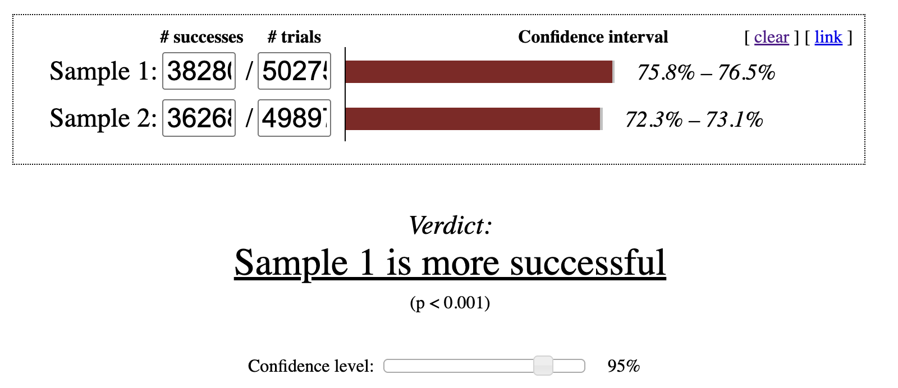
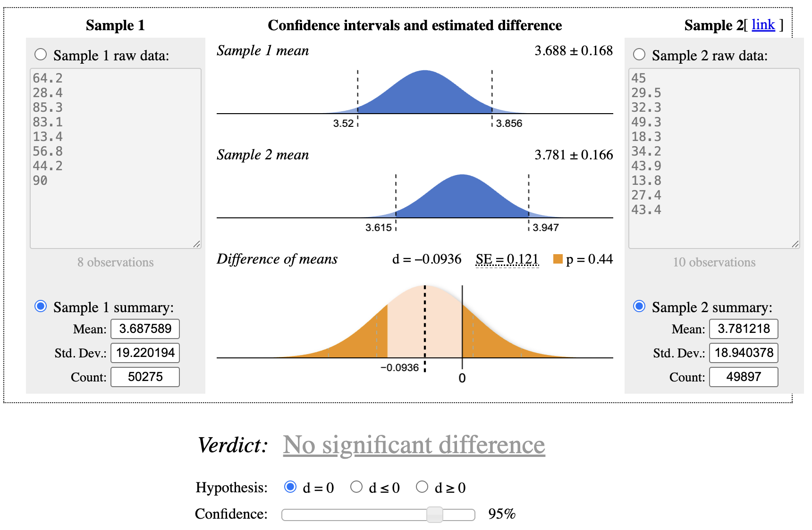
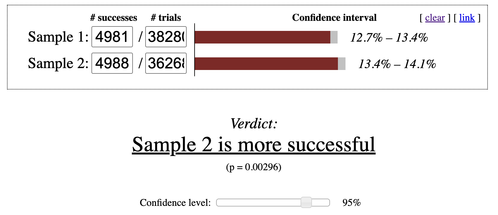
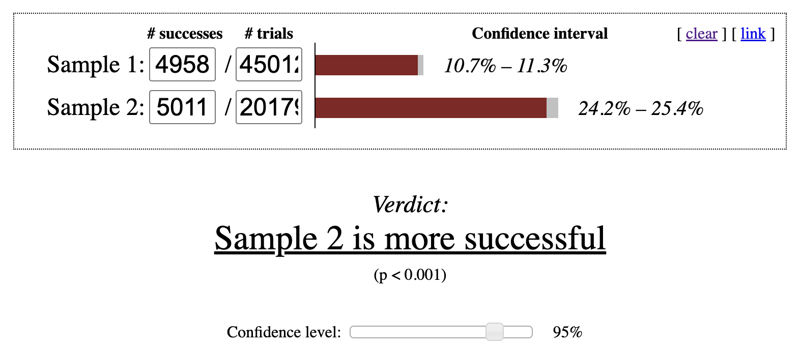

This book is a first draft, and I am actively collecting feedback to shape the final version. Let me know if you spot typos, errors in the code, or unclear explanations, your input would be greatly appreciated. And your suggestions will help make this book more accurate, readable, and useful for others. You can reach me at: Email:contervalconsult@gmail.com LinkedIn:www.linkedin.com/in/jorammutenge Datasets:Download all datasets
Enough A/B testing will turn any website into a porn site.
— Seth Godin
Experimentation, often called A/B testing or split testing, is widely considered the most reliable way to establish causal relationships. Much of data analysis focuses on identifying correlations, situations in which two events or attributes tend to occur together because of behavior, shared characteristics, or seasonal patterns. You have likely heard the phrase “correlation does not equal causation,” and experimentation exists specifically to address this limitation.
Every experiment begins with a hypothesis, a prediction about how behavior will change when some aspect of a product, workflow, or communication is altered. The change might involve a redesigned interface, a revised onboarding flow, a new recommendation algorithm, updated marketing language, or many other possibilities. In principle, anything an organization owns or controls can be tested. Hypotheses often grow out of earlier analytical work. For example, if analysis shows that many users abandon a signup form partway through, a reasonable hypothesis might be that simplifying the form will increase completion rates.
A second essential component of an experiment is a success metric. The expected behavioral change may involve form submissions, purchase rates, click-throughs, user retention, engagement, or any other action tied to organizational goals. A good success metric clearly quantifies behavior, is easy to measure, and is sensitive enough to detect meaningful differences. Metrics such as click-through rate, checkout completion, or time to complete a task often meet these criteria. Other measures, including long-term retention or customer satisfaction, are important but are usually influenced by many external factors. As a result, they may not respond clearly to a single experimental change. Strong success metrics are often those already tracked as part of routine business monitoring.
Tip
You might wonder whether an experiment can track multiple success metrics. With Polars, generating many metrics is certainly possible. However, this raises the multiple comparisons problem. Without delving into the statistics, the intuition is straightforward. The more metrics you examine, the more likely it becomes that at least one will appear significant purely by chance. If you check a single metric, you may or may not observe a meaningful difference. If you check 30, it is quite likely that one will look significant even if the experiment had no real effect. As a general guideline, select one or two primary success metrics. A small number of additional metrics, often called guardrail metrics, can help ensure that the experiment does not unintentionally harm something important. For example, you might verify that a new feature does not slow search results, even if speed is not the primary goal.
The third requirement for experimentation is a system that randomly assigns individuals or entities to a control group or a test variant and then adjusts their experience accordingly. This setup is often referred to as a cohorting system. Many software providers offer tools for this purpose, while some organizations build their own to gain additional flexibility. Regardless of the approach, analyzing experiments with Polars requires that assignment data be combined with behavioral data in a single dataset.
Tip
The experiments discussed in this chapter focus on online experiments, where assignment is handled programmatically and user behavior is tracked digitally. Many scientific fields also rely on experimentation, but there is an important distinction. Online experiments typically use metrics that are already collected for other purposes, whereas scientific studies often gather data exclusively for the experiment and only during the experiment window. In online settings, it is sometimes necessary to rely on proxy metrics when direct measurement is not feasible.
Once you have defined a hypothesis, selected a success metric, and implemented a cohorting system, you can run experiments, collect data, and evaluate results using Polars.
6.1 Strengths and Limits of Experiment Analysis with Polars
Polars is well suited for experiment analysis. Many success metrics are already part of an organization’s analytical toolkit, with existing Polars code ready to apply. Incorporating variant assignment data into established logic is often a straightforward extension of existing workflows.
Polars also supports automated experiment reporting. The same analysis code can be reused across experiments by changing only the experiment name or identifier in a filter statement. Organizations that run many experiments often develop standardized reporting templates to streamline both analysis and interpretation.
One important limitation is that Polars does not compute statistical significance on its own. Libraries such as SciPy can address this gap by performing the required statistical tests. A common workflow is to calculate summary statistics in Polars and then use SciPy to assess whether observed differences are statistically significant. We won’t use SciPy in this book. Instead, we’ll use the online calculator at Evanmiller.org to check if the experiment results are statistically significant.
ImportantExpand Your Knowledge
WHY CORRELATION IS NOT CAUSATION
It is much easier to show that two variables move together, whether they increase, decrease, or occur at the same time, than it is to demonstrate that one causes the other. Although we naturally look for cause-and-effect explanations, there are actually five possible relationships between two variables, X and Y:
X causes Y: This is the relationship we usually hope to identify. A change in X directly leads to a change in Y.
Y causes X: The relationship exists, but the direction is reversed. Carrying a backpack does not cause someone to attend school. Instead, attending school leads people to carry backpacks.
X and Y share a common cause: A third factor explains both variables. For example, sunscreen sales and beach attendance both increase on sunny days, but neither causes the other. The weather drives both behaviors.
X and Y influence each other: A feedback loop develops. For instance, when a subscription service begins to lose a customer’s interest, the customer interacts less. This reduces the system’s ability to recommend relevant content, which further decreases engagement. Over time, it becomes difficult to identify which change initiated the cycle.
There is no real relationship: Sometimes two metrics appear correlated purely by coincidence. When enough variables are examined, some apparent patterns will arise by chance alone.
6.2 The Dataset
In this chapter, we work with four datasets created for a fictional online education platform called XtraLesson. The students dataset contains records for individuals who registered for courses, including their signup dates and countries of origin. A small preview is shown below.
import polars as plstudents = pl.read_csv("data/students.csv", try_parse_dates=True)students.sample(3)
shape: (3, 3)
User_ID
Enroll_Date
Country
i64
date
str
29848
2024-01-17
"United States"
53061
2024-01-27
"Mexico"
46176
2024-01-23
"United States"
The actions dataset captures the activities students perform on the XtraLesson platform. A brief sample appears here.
All four datasets are fully synthetic. They were generated using random processes but are designed to resemble the structure and relationships found in a real-world online learning platform.
6.3 Types of Experiments
Experiments can take many forms. Nearly any aspect of a user’s experience, whether they are customers, members, or participants, can be modified and tested. From an analytical standpoint, experiments generally fall into two broad categories: those that measure binary outcomes and those that measure continuous outcomes.
6.3.1 Experiments with Binary Outcomes: The Chi-Squared Test
Binary-outcome experiments evaluate situations with only two possible results. A user either completes a registration flow or abandons it. Someone clicks an advertisement or ignores it. A learner graduates or does not. In these experiments, we compute the proportion of users in each variant who complete the action of interest. The numerator represents the number of users who performed the action, while the denominator includes all users exposed to the variant. This proportion is commonly referred to as a rate, such as a completion rate, click-through rate, or graduation rate.
To determine whether these rates differ meaningfully across variants, we use the chi-squared test, a statistical method designed for categorical data.1 Results from this test are typically organized into a contingency table, which displays counts at the intersection of two categorical variables. If you have worked with pivot tables before, this layout will likely feel familiar.
Consider an example using the XtraLesson data. A product manager introduces a redesigned onboarding flow that guides new students through finding courses, identifying discounts, and enrolling. The objective is to encourage more students to complete onboarding and begin their first course. This redesign was evaluated in an experiment called “Welcome tutorial,” which randomly assigned students to either “Control” or “Variant 1” in the experiments dataset. In the actions dataset, the event labeled “Tutorial complete” indicates whether a student finished the onboarding flow.
The contingency table summarizes how many students in each variant did or did not complete the tutorial. The Polars code below computes these counts by grouping on the Variant column and summing the presence or absence of the “Tutorial complete” action:
Polars dataframes can be customized not only in structure but also in appearance. As a small enhancement, we can apply styling to the contingency table to improve readability. To do this, install the Great Tables library, which Polars uses for styling:
pip install great-tables# Or if using Jupyter!pip install great-tables
Once the library is installed, we can apply formatting to the table:
To use an online significance calculator, we need two values for each variant: the number of students who completed the action and the total number of students assigned to that variant. The Polars code to extract this information is straightforward. We first filter for “Welcome tutorial” in the experiments dataframes and left join with the actions dataframe after applying a filter for “Tutorial complete”. The left join ensures that students who did not complete the action are still included. Then we perform a group_by on Variant column and count how many students completed the tutorial. Finally, we compute the completion percentage by dividing the number of completers by the total number of students assigned to each variant:
We can see that Variant 1 produced more completions than the Control group, with 72.69% of students finishing compared to 76.14%. The natural next question is whether this difference is large enough to be considered statistically significant rather than the result of random variation. After entering these values into an online significance calculator, we find that Variant 1’s completion rate is statistically significant at the 95% confidence level as shown in Figure 6.1. Based on this result, Variant 1 is considered the winning experience.

Figure 6.1: p-value check for chi-squared test at 95% confidence interval
Tip
A 95% confidence level is a common benchmark, but it is not the only one used in practice. There is extensive discussion about how to interpret confidence levels, when to choose alternative thresholds, and how to adjust analyses when experiments compare multiple variants against a single control.
Binary-outcome experiments tend to follow a consistent workflow. First, determine how many users completed the action of interest in each variant. Next, count how many users were assigned to each group. While the Polars code required to extract these success counts can vary depending on how events are recorded, the overall approach remains consistent. With this foundation in place, we can now turn to experiments that involve continuous metrics.
6.3.2 Experiments with Continuous Outcomes: The t-Test
Many experiments focus on improving continuous metrics rather than simple yes-or-no outcomes. Continuous metrics can take on a wide range of values, such as total spending, time spent on a page, or the number of days a user engages with an app. Ecommerce companies often test changes to product pages or checkout flows to increase revenue. Media organizations may experiment with layouts or headlines to drive higher article consumption. App developers frequently run campaigns designed to encourage users to return more often.
In these experiments, the goal is to determine whether the average value of a metric differs between variants in a statistically significant way. The standard tool for this analysis is the two-sample t-test, which evaluates whether we can reject the null hypothesis that the two means are equal at a chosen confidence level, typically 95%. The test requires three inputs: the mean, the standard deviation, and the sample size. All three are straightforward to compute using Polars.
Let’s walk through an example using the XtraLesson data. Earlier, we examined whether the redesigned welcome tutorial increased the likelihood that students completed onboarding. Now we want to assess whether that same tutorial affected how much students spent on courses. Because the metric of interest is spending, we need to compute the mean and standard deviation of the amount spent for each variant.
We begin by filtering the experiments dataframe for the “Welcome tutorial” experiment and then left joining the payments dataframe to bring in spending data. A left join is essential because many students never make a purchase, yet they must still be included in the analysis. For students without payments, we replace missing values with 0 using fill_null. Since mean and std ignore nulls, this step ensures that non-purchasers are counted correctly. Finally, we group_by the Variant column to compute the mean, standard deviation, and total number of students in each variant.
After entering these values into an online t-test calculator, we find no statistically significant difference in spending between the control group and Variant 1 at the 95% confidence level as shown in Figure 6.2. Variant 1 improved tutorial completion, but it did not increase the Amount spent.

Figure 6.2: p-value check for t-test at 95% confidence interval
A related question is whether Variant 1 influenced spending among students who actually completed the tutorial. Students who never finish onboarding do not enroll in courses and therefore make no purchases. To focus only on students who completed the tutorial, we use a similar approach but add an inner join to the actions dataframe. This restricts the dataset to students with a “Tutorial complete” event:
When we test these values, the control group shows a statistically significantly higher average spend than Variant 1 at the 95% confidence level. Although this result may seem counterintuitive, it illustrates why defining the success metric before running an experiment is critical. Variant 1 clearly improved tutorial completion, so by that measure the experiment succeeded. However, it did not increase overall revenue. One possible explanation is a change in the composition of students: the additional students who completed onboarding in Variant 1 may have been less likely to purchase additional courses. If the original hypothesis was that improving onboarding completion would increase revenue, this experiment did not support that assumption, suggesting that the product team may need to explore alternative approaches.
6.4 Challenges with Experiments and Options for Rescuing Flawed Experiments
Although controlled experiments are the most reliable way to understand causal relationships, many things can still go wrong. When the underlying idea behind a test is fundamentally incorrect, there is little Polars or any other tool can do to repair it. However, when problems arise from technical mishaps, it is sometimes possible to reshape or filter the data so that at least part of the experiment remains interpretable. Experiments also require substantial investment from engineers, designers, and marketers who build and maintain variants. They carry opportunity cost as well, or the lost value that could have been captured by guiding customers through a more effective conversion journey or product experience. In practice, using Polars to extract whatever insights remain is often a worthwhile effort.
6.4.1 Variant Assignment
Random assignment of units, such as users, sessions, or other identifiers, to control and treatment groups is central to experimentation. Still, mistakes can occur due to a misconfigured test, a system outage, or limitations in the cohorting tool. When this happens, groups may become imbalanced, fewer entities may be assigned than expected, or the assignment process may not be random at all.
Polars can sometimes help recover an experiment in which too many units were assigned. For example, an experiment intended only for first time visitors may accidentally include the entire user base. A similar issue arises when the tested feature is visible only to a subset of users, perhaps because it appears deep in the product flow or requires a prior action such as completing a profile. Technical constraints may cause everyone to be cohorted even though many participants could never encounter the treatment. In these cases, adding a join that restricts the dataset to the intended eligible population can help. For a new user experiment, this might involve an inner join with a dataset containing account creation dates, followed by a filter that removes users who registered long before the cohorting event. The same pattern applies when eligibility depends on a prerequisite action. After narrowing the dataset, it is important to confirm that the remaining sample is still large enough to support meaningful statistical conclusions.
When too few entities are cohorted, the first step is to verify whether the sample size is adequate. If it is not, the experiment should be rerun. If the sample is technically large enough, the next question is whether the assignment process introduced bias. For example, I have encountered situations where users accessing the product through corporate networks with strict security settings were never assigned to any variant because the cohorting script failed to load. If the excluded group differs systematically, perhaps by geography, technical environment, or organizational context, it is important to assess its size and consider whether adjustments are needed before interpreting results.
Another potential issue is a flawed assignment mechanism that fails to randomize properly. This is rare with modern experimentation platforms, but when it occurs, the entire test becomes invalid. Extremely strong or suspiciously clean results can be a warning sign. I have seen cases where a configuration change caused highly active users to be placed into both control and treatment groups simultaneously. Careful data checks can reveal whether entities appear in multiple variants or whether pre experiment engagement levels are unevenly distributed across groups.
Tip
Running an A/A test is a useful way to detect problems in the assignment system. In an A/A test, entities are cohorted as usual and metrics are compared, but both groups receive the exact same experience. Because nothing differs between the cohorts, we should observe no statistically significant differences. If a gap appears, it signals that the assignment logic needs investigation and correction.
6.5 Outliers
Statistical methods for continuous metrics rely heavily on averages, which makes them sensitive to extreme values. It is not uncommon for a single unusually high value customer to make a variant appear significantly better than it truly is. Without those outliers, the result might be neutral or even reversed. In most cases, the goal is to understand how a treatment affects typical users, so adjusting for outliers often leads to more reliable conclusions.
Anomaly detection was covered in Chapter 5, and the same ideas apply here. Outliers can be identified by examining the experiment data directly or by comparing results to pre experiment baselines. Techniques such as winsorizing, also discussed in Chapter 5, can trim values beyond a chosen percentile, such as the 95th or 99th. This preprocessing step can be performed in Polars before continuing with the analysis.
Another approach is to convert a continuous metric into a binary one. Instead of comparing average spend, which may be distorted by a few extreme purchasers, you can compare purchase rates between variants and then follow the procedures for binary outcomes. For example, consider the proportion of students who made a purchase after completing onboarding in the Control and Variant 1 groups of the “Welcome tutorial” experiment:
From these results, we can see that although Variant 1 includes more students overall, it has fewer purchasers. The Control group shows a 13.75% purchase rate, while Variant 1 is at 13.01%. After entering these values into an online calculator, the Control group’s conversion rate is statistically significantly higher as shown in Figure 6.3. Even so, the organization might still accept a small decline in purchases if the treatment meaningfully increases onboarding completion. Improvements in onboarding can boost rankings or generate more word of mouth referrals, both of which may drive long term growth.

Figure 6.3: p-value check for chi-squared test at 95% confidence interval
Success metrics can also be defined using thresholds, with analysis focused on the share of entities that meet those thresholds. For instance, a metric might indicate whether a learner completes a module or logs in at least twice per week. There are many ways to construct such measures, so it is essential to choose metrics that genuinely reflect what matters to the organization.
6.5.1 Time Boxing
Experiments often span multiple weeks. As a result, participants who enter earlier naturally have more time to complete behaviors tied to the primary metric. To reduce this imbalance, analysts can introduce time boxing, which defines a fixed observation window that begins at each participant’s entry point and counts only the activity that occurs within that window.
The ideal length of a time box depends on the behavior being measured. If the outcome occurs almost immediately, such as clicking an advertisement, the window might be as short as an hour. For purchase-related metrics, a window between 1 and 7 days is common. Shorter windows also allow analysts to review results sooner, since every entity must be given the full allotted time to act before evaluation. The goal is to select a window that reflects both the organization’s operational constraints and the natural timing of user behavior. For example, if most customers convert within a few days, a 7-day window is reasonable. If conversions typically take several weeks, a 30-day window may be more appropriate.
To illustrate, we can modify the earlier continuous-outcome example by restricting purchases to those made within 7 days of cohort assignment. It is critical that the time box begins at the moment the user is assigned to a variant:
The resulting averages remain close to one another, and the differences are not statistically significant. In this case, the conclusion reached with time boxing matches the conclusion reached without it.
Because purchases occur relatively infrequently, the impact of time boxing is modest in this example. For metrics that accumulate quickly, such as pageviews, clicks, likes, or articles read, time boxing plays a much more important role. It prevents early entrants from appearing disproportionately successful simply because they had more time to generate activity.
6.5.2 Repeated Exposure Experiments
In discussions of online experimentation, many examples involve what can be described as “one-and-done” interactions. The user encounters the treatment once, responds to it, and does not revisit that experience. Account creation is a typical example. Users register only a single time, so changes to the registration flow affect only new sign-ups. These experiments are usually straightforward to analyze.
A different category involves repeated exposure experiences, where users encounter the change multiple times as they continue using a product or service. In these experiments, individuals are expected to see the treatment repeatedly. Changes to an app’s interface, such as adjustments to colors, text, or the placement of key elements, are experienced throughout ongoing usage. Similarly, recurring email campaigns expose customers to subject lines and message content over many interactions.
Repeated-exposure experiments are more challenging to evaluate because of novelty effects and regression to the mean. A novelty effect occurs when behavior changes simply because something appears new, not because it is inherently better. Regression to the mean describes the tendency for metrics to drift back toward typical levels over time. For example, changing a user interface element often increases engagement initially. Users may click more on a new button color or layout. That early lift reflects novelty. As users become accustomed to the change, engagement often settles closer to its original level, demonstrating regression. The key question is whether the long-term level ultimately ends up higher or lower than before. One common approach is to wait long enough for the novelty to fade, which may take days, weeks, or even months, before drawing conclusions.
When many changes occur, or when treatments are delivered sequentially, such as in recurring email or direct-mail campaigns, assessing overall impact becomes even more difficult. It can be tempting to attribute a purchase to a specific email variant, but the customer may have purchased regardless. One strategy is to create a long-term holdout group that receives no marketing messages or product experience changes. This approach differs from observing users who opt out of marketing, since opt-out behavior is not random and introduces bias. Although long-term holdouts can be operationally challenging, they provide one of the clearest ways to measure cumulative program effects.
Another option is to perform cohort analyses across variants. By tracking groups over extended periods, such as weeks or months, analysts can compute retention or cumulative metrics and compare long-term differences between treatments.
Despite these complexities, experimentation remains the strongest method for establishing causal relationships across domains ranging from marketing communications to in-product design. In practice, however, real-world constraints sometimes prevent ideal A/B testing. In the next section, we will explore analytical techniques for situations where controlled experiments are not feasible.
6.6 When Controlled Experiments Aren’t Possible: Alternative Analyses
Randomized experiments remain the strongest tool for moving from correlation to credible causal inference. However, there are many situations in which running such an experiment is not feasible. Ethical concerns may prevent assigning different treatments to different groups, particularly in domains such as healthcare or education. Regulatory constraints can also limit experimentation in industries like finance. In other cases, practical limitations make experimentation unrealistic, such as when it is impossible to restrict access to a new experience to only a randomized subset of users. Even in these situations, it is often worth considering whether smaller components, such as copy, layout, or specific design choices, can still be tested within acceptable boundaries.
Another common scenario occurs when a change has already been implemented and data collection is complete. Unless the organization is willing to revert the change, it is impossible to run a proper experiment retroactively. This often happens because no analyst was available to advise on experimental design at the time. I have worked with teams that later needed help interpreting the impact of changes that would have been much easier to evaluate if a holdout group had been created. In other cases, the change was unintentional. Examples include partial site outages, form errors, or large external disruptions such as storms or wildfires.
Although causal claims are weaker without randomization, several quasi-experimental approaches can still yield useful insights. These methods attempt to construct comparison groups from existing data that approximate control and treatment conditions as closely as possible.
6.6.1 Pre-/Post-Analysis
A pre-/post-analysis compares outcomes for the same population, or a very similar one, before and after a specific change. The period before the change serves as the control, while the period after the change acts as the treatment.
This approach works best when the change occurs at a clearly identifiable point in time, allowing the data to be cleanly divided into “before” and “after” segments. You must also decide how long each window should be, and the two windows should be roughly equal in duration. For example, if two weeks have passed since the change, you might compare those two weeks with the two weeks immediately preceding it. It can be helpful to examine multiple window lengths, such as one week, two weeks, three weeks, and four weeks, to assess whether conclusions are consistent across them.
Consider the following example. Suppose the onboarding flow for XtraLesson includes a checkbox that allows students to opt in to course-related emails. Historically, this box was checked by default, but a new regulation requires it to be unchecked. The update went live on January 27, 2024, and we want to assess whether this change reduced the email opt-in rate. We compare the two weeks before the change with the two weeks after it. A two-week window is long enough to smooth out day-of-week effects while remaining short enough to limit the influence of unrelated factors.
In the Polars code below, variants are assigned using a when-then-otherwise expression. Students enrolled before the cutoff date are labeled “pre,” and those enrolled afterward are labeled “post.” We then perform a left join with the actions dataframe, filtering to the “Email opt-in” action. Finally, we group_byVariant and compute metrics including the number of students in each group, the number of opt-ins, and the opt-in rate. I also include the number of distinct enrollment days in each group as a quality check:
The results show that students in the “pre” period opted in at a much higher rate, 58.75%, than those in the “post” period, 40.63%. An online significance test confirms that this difference is statistically significant. Because the change was mandated, XtraLesson may not be able to revert it. However, future experiments could explore whether providing additional context or examples encourages more students to opt in.
When using pre-/post-analysis, it is important to remember that many forces unrelated to the change can influence the metric. Seasonal effects, external events, and marketing activity can all shift user behavior, even over short time horizons. For this reason, pre-/post-analysis is weaker than a randomized experiment for establishing causality. Still, it can be a valuable technique when experimentation is not possible and can help generate hypotheses for future controlled studies.
6.6.2 Natural Experiment Analysis
A natural experiment occurs when different groups are exposed to distinct conditions due to circumstances that resemble random assignment. One group experiences the standard or control scenario, while another encounters an unintended variation that may affect outcomes positively or negatively. These situations often arise unexpectedly, such as from a software bug or an external event that impacts only certain regions. For the analysis to be credible, we must clearly identify which entities were exposed to the altered condition and establish a comparison group that closely resembles them.
Polars can be used to construct these variants and compute cohort sizes along with outcome metrics, such as counts of successes for binary outcomes or summary statistics like the mean, standard deviation, and sample size for continuous outcomes. Once calculated, these values can be entered into an online statistical calculator just as they would be for a traditional experiment.
To illustrate this approach using the XtraLesson datasets, suppose that during the analysis window, Canadian students unintentionally saw an incorrect offer when they first opened the course catalog. Each bundle displayed an extra zero in the number of included courses. A bundle intended to show 1 course appeared as 10, while a bundle with 5 courses appeared as 50, and so on.
Our objective is to determine whether this error caused Canadian students to enroll in paid courses at a higher rate than students elsewhere. Rather than comparing Canada to all other countries, we limit the comparison to the United States. The two countries are geographically close, share a common language for most learners, and, based on earlier analysis, exhibit similar learning and purchasing behavior. Students from other regions differ enough that including them would introduce unnecessary variability, so they are excluded from this comparison.
To perform the analysis, we define the variants based on the distinguishing feature, which in this case is the Country column in the students dataframe. Depending on the dataset, more complex Polars code may be necessary. However, the overall strategy mirrors earlier examples: count the number of students in each cohort and the number who made a purchase.
The proportion of Canadian students who made a purchase is higher at 24.83%, compared with 11.01% for U.S. students. Entering these values into an online statistical calculator indicates that the Canadian conversion rate is significantly higher at the 95% confidence level as shown in Figure 6.4.

Figure 6.4: p-value check for chi-squared test at 95% confidence interval
One of the most difficult aspects of natural experiment analysis is demonstrating that the exposed and comparison groups are sufficiently similar to support valid statistical conclusions. While it is rarely possible to eliminate all confounding factors, examining demographic and behavioral similarities can strengthen the credibility of the results. Because natural experiments lack true randomization, any causal claims are inherently weaker and should be framed with appropriate caution.
6.6.3 Analysis of Populations Around a Threshold
In some settings, a specific cutoff determines who receives a treatment and who does not. A scholarship may require a minimum GPA, a subsidy might depend on household income, or a high churn risk score may trigger intervention from a sales representative. In these cases, individuals just above and just below the threshold are likely to be very similar. Instead of comparing all treated and untreated individuals, we can focus on those near the cutoff on both sides. This strategy is known as a regression discontinuity design (RDD).
To apply this method, we create variants by splitting the data around the threshold, similar to a pre- and post-analysis. There is no universal rule for selecting the width of the bands around the cutoff. The groups should be reasonably balanced in size and large enough to detect meaningful differences. Analysts often repeat the analysis using several bandwidths, such as including observations within 5%, 7.5%, and 10% of the threshold. Consistent results across these specifications increase confidence in the findings, while divergence suggests that the evidence may be inconclusive.
As with other observational methods, results from an RDD should be interpreted carefully when making causal claims. Potential confounding factors require close attention. For example, if high-risk customers receive multiple retention efforts, such as discounts or outreach from several teams, those additional actions may influence outcomes and complicate interpretation.
6.7 Conclusion
Experimental analysis encompasses a broad set of techniques, many of which connect to topics covered elsewhere in this book, including anomaly detection. Data profiling can help surface issues that affect interpretation. When randomized experiments are not feasible, several alternative strategies are available, and Polars can play a key role in constructing synthetic control and variant groups.
In the next chapter, we turn to assembling complex datasets for analysis, bringing together many of the concepts discussed so far.